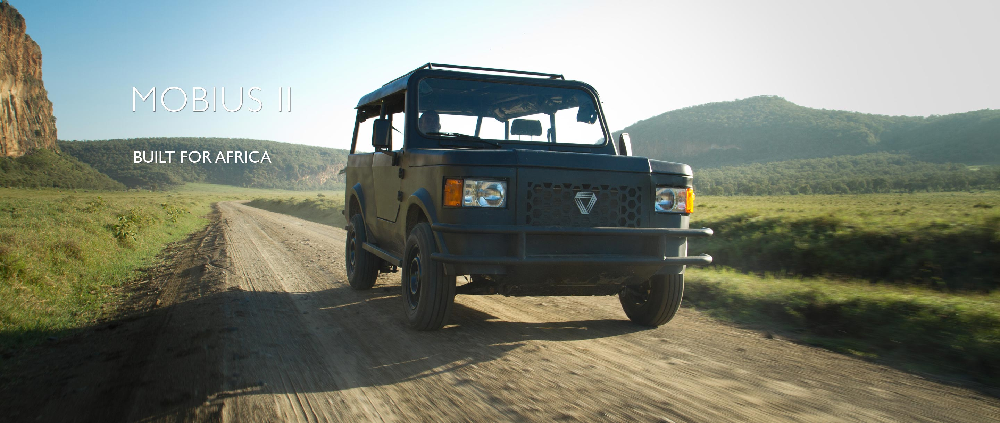

ICT enabled community innovation
We help develop the community by granting them access to ICT tools for development

Training
We help develop the community by granting them access to ICT tools for development

Advocacy for social development
We help develop the community by granting them access to ICT tools for development